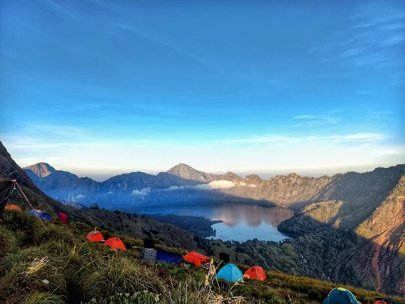

Segara Anak Crater Lake

Plawangan Sembalun Crater Rim

Sunrise View from Summit
Standing majestically at 3,726 meters, Mount Rinjani is Indonesia's second-highest volcano. Renowned for its stunning crater lake Segara Anak and the active cone Gunung Baru Jari, it offers one of the most breathtaking trekking experiences in Southeast Asia.
Explore the natural wonders, sacred crater lake, and thrilling peaks of Rinjani
Mount Rinjani is a massive active stratovolcano located within the UNESCO Global Geopark network on Lombok Island, Indonesia.
For both the local Sasak people and Balinese Hindus, Rinjani is considered a sacred mountain. Every year, pilgrims climb to the crater lake to perform traditional rituals and offer prayers to the spirits of the mountain.
Capturing the majestic landscapes, volcanic caldera, and serene natural beauty
Segara Anak Crater Lake

Plawangan Sembalun Crater Rim
Sunrise View from Summit
A trip to Mount Rinjani offers an immersive dip into the rich culture of the Sasak ethnic group. Visitors can explore traditional villages like Sade Village and savor spicy, aromatic Sasak delicacies after an intense trek.